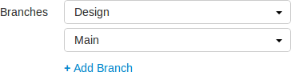
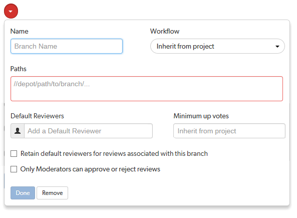

Manage project branches
- Visit your project page.
-
Click Edit.
Next to the Branches label, a drop-down button for each branch is displayed, and + Add Branch.

Adding a branch
- Follow the initial steps.
- Click + Add Branch to display the branch drop-down dialog.

- Enter a short Name for your branch.
-
Optional (not displayed if the Workflow feature is disabled): associate a workflow with the project branch.
To use the parent project workflow, select Inherit from project from the Workflow dropdown list. This is the default when you create a new branch.
To associate a workflow, select the workflow from the Workflow dropdown list, or enter the workflow name in the search field. The field auto-suggests workflows as you type. Only workflows that you own and shared workflows are shown in the dropdown list.
Tip- When a workflow is associated with a project, the workflow is used for all of the branches in that project.
- When a project branch is associated with a workflow, the workflow of the parent project is ignored and the branch workflow is used.
For more information about workflows and how project workflows interact with branch workflows, see Workflow basics.
-
Enter one or more branch paths in the Paths field using depot syntax, one path per line.
Tip- Branch paths, and files can be excluded by putting a minus symbol - at the start of the path.
- Branch paths are processed in order, starting with the first file path in the list.
For example:
//depot/main/swarm/...
-//depot/main/swarm/test/...
//depot/main/swarm/test/ResultSummary.html
The first path includes all of the directories and files under //depot/main/swarm/ in the project branch.
The second path excludes all of the files in -//depot/main/swarm/test/ from the project branch.
The third path includes the ResultSummary.html file from the previously excluded //depot/main/swarm/test/ directory.
Note- Wildcards should not be used; the only exception is that the branch path can end with the Helix server wildcard ...
- Branch paths are case sensitive.
- Branch paths, and files are not checked to see if they are valid when you save the branch:
- If you enter an invalid path ending in the wildcard ..., the path will not be displayed in the project file browser until the path is created. This allows you to specify a path before it has been created.
- If you enter a path that ends with a file that has not been committed, or a non-existent file, Swarm displays a 404 error when you navigate the path to the file with the project file browser.
NoteThe Project Commits tab can fail to show some Helix server commits in the top level view. Individual branch views display the commits correctly:
- The Project Commits tab top level client view is made up of all of the branches of the project.
- For example, Project Alpha:
- Branch: QA:
- //depot/alpha/dev/QA/...
- Branch: Dev :
- //depot/alpha/dev/...
- -//depot/alpha/dev/QA/...
- The project commits tab view is generated by processing the branches in the order that they were created in and from top to bottom for the paths in each of those branches.
- For the project Alpha example above:
- The first path includes all of the directories and files under //depot/alpha/dev/QA/ in the project commits tab top level view.
- The second path includes all of the directories and files under //depot/alpha/dev/ in the project commits tab top level view.
- The third path excludes all of the directories and files in //depot/alpha/dev/QA/ from the project commits tab top level view.
- Result: commits made to //depot/alpha/dev/QA/ that should be shown for the QA branch are not displayed in the Project Commits tab top level view.
- When you have a simple branch structure this can be avoided by considering this issue when you create your branches. In the example above, creating the Dev branch first and then creating the QA branch avoids the problem because//depot/alpha/dev/QA/ is not excluded from the Project Commits tab top level view.
- Default reviewers:
-
Optional: specify Default Reviewers for the project branch.
This field auto-suggests users, and groups within Helix server as you type (up to a combined limit of 20 entries). Click on the user or group to add them as a default reviewer. Each time a new review is created, the default reviewers will be added to the review.
- Users: click the star icon to the left of the userid to toggle whether their vote is required or not. A solid star means that their vote is required to approve a review, whereas the outlined star means that their vote is optional.
- Groups: click the star icon to the left of the groupid , and select whether the group is a required reviewer (one vote), a required reviewer (all votes), or an optional reviewer. A solid star means that all group member votes are required to approve a review, a solid star with a 1 inside means at least one group member must vote up and no group members vote down to approve a review, and the outlined star means that the group vote is optional.
Click the X icon to the right of the userid or groupid to remove that default reviewer from the default reviewers list.
ImportantWhen a review is part of multiple projects/project branches:
- The default reviewer lists for all of the projects and project branches the review is part of are combined and added to the review.
- If a default reviewer has different reviewer options set on projects and project branches that the review is part of, the strictest reviewer option is used for the review.
Example: A review is created and it is part of Project A, Project B, and Project Branch b.
Project A: default reviewer X is an Optional reviewer
Project B: default reviewer X is an Optional reviewer
Project Branch b: default reviewer X is a Required reviewer
Result: default reviewer X is added to the review as a Required reviewer
NoteIf users or groups are @mentioned in a new changelist description that includes
#review, they will be added to the review as reviewers. If any of these reviewers are already specified as default reviewers they will not be added to the review again, the reviewer's most restrictive reviewer option is used for the review.NoteIf a default reviewer is deleted from Helix server they will not be added to new reviews.
- Optional: click the Retain default reviewers for reviews associated with this branch checkbox to prevent default reviewers being removed from reviews associated with this branch.
For more information about retained default reviewers, see Retain default reviewers.
-
-
Optional: set the Minimum up votes required for reviews associated with this branch.
To inherit the parent project setting, leave Minimum up votes set to Inherit from project. This is the default when you create a new branch.
To use the branch setting and ignore the parent project setting, set Minimum up votes to 1 or more on the branch.
A review cannot be approved until all of the Required reviewers have voted up the review and the Minimum up votes specified has been satisfied.
- If a review spans projects/branches, the Minimum up votes for each of the projects and branches must be satisfied before you can approve the review.
- Required reviewers are included when up votes are counted.
- When Count votes up from is set to Members for a workflow associated with a project/branch, only the up votes of members of the project contribute to satisfying the Minimum up votes for a project/branch. For more information about the Count votes up from rule, see Workflow rules.
ImportantIf the Workflow feature is disabled, all votes are counted not just votes from project members.
ImportantIf the Minimum up votes required is set higher than the number of reviewers that exist for a review, approval will be blocked for that review. This is true even if all the reviewers on the review have voted up the review.
-
Optional: check the Only Moderators can approve or reject reviews checkbox.
When checked, a field is displayed, allowing you to add a new moderator. The field auto-suggests groups and users within the Helix Core server as you type.
If a group is specified as a moderator, all of the members of that group have the same moderator privileges for that project branch as if they were added individually.
Once the branch specification is complete and the project has been saved, changing the state of any review associated with this moderated branch is restricted as follows:
- Only moderators can approve or reject the review. Moderators can also transition a review to any other state.
-
The review's author, when not a moderator, can change the review's state to Needs review, Needs revision, Archived, and can attach committed changelists.
Normally, the review's author cannot change the review's state to Approved or Rejected on moderated branches. However, authors that are also moderators have moderator privileges, and may approve or reject their own review.
When
disable_self_approveis enabled, authors who are moderators (or even users with admin privileges) cannot approve their own reviews. - Project members can change the review's state to Needs review or Needs revision, and can attach committed changelists. Project members cannot change the review's state to Approved, Rejected, or Archived.
- Users that are not project members, moderators, or the review's author cannot transition the review's state.
- For the review's author and project members, if a review is not in one of their permitted states, for example if the review's state is Rejected, they cannot transition the review to another state.
ImportantModerators prevent the automatic approval of reviews, for more information about automatically approving reviews using workflow rules see Workflow rules.
NoteBy default, when a review spans multiple branches that have different moderators, only one moderator from any one of the branches needs to approve the review.
Swarm can be configured to require that one moderator from each branch must approve the review, this is a global setting. If a moderator belongs to more than one of the branches spanned by the review, their approval will count for each of the branches they belong to. For instructions on how to configure moderator behavior, see Moderator behavior when a review spans multiple branches.
These restrictions have no effect on who can start a review.
-
Click Done to accept your branch specification.
Once the branch definition has completed, if any moderators were specified, the number of moderators for that branch is displayed in the list of branches.
- Click Save to save the branch changes to your project.
The project name does not need to be included in the branch name; Swarm displays the project name with the branch name when appropriate.
Editing a branch
- Follow the initial steps.
- Click the branch drop-down button you want to edit.
- Revise the Name, Paths, default reviewers, or moderators as required.
- Click Save.
Removing a branch
- Follow the initial steps.
- Click the branch drop-down button you want to remove.
- Click Remove.
- Click Save.